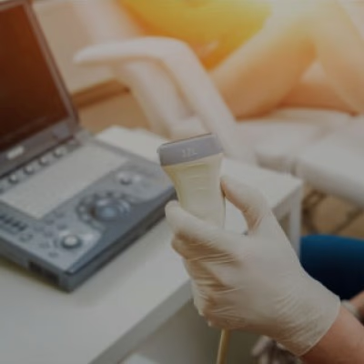
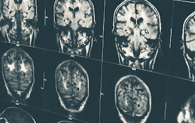
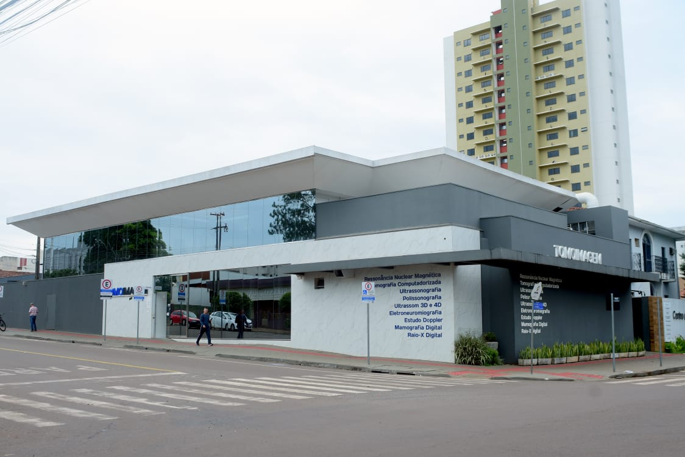

Acesse os resultados dos seus exames de forma rápida e fácil através do nosso portal online
Acesse aquiAgende seus exames
Pelo WhatsApp
Clique aquiNossos serviços de Exames
Temos equipamentos de última geração que garantem diagnósticos precisos.

ULTRASSONOGRAFIA / DOPPLER
RESSONÂNCIA MAGNÉTICA
MAMOGRAFIA DIGITAL

TOMOGRAFIA COMPUTADORIZADA
POLISSONOGRAFIA
ELETRONEUROMIOGRAFIA
Sobre a TOMOIMAGEM
Localizada em Campo Mourão, a TOMOIMAGEM Medicina Diagnóstica iniciou suas atividades em 2008, com o compromisso de oferecer excelência em imagens diagnósticas e na entrega de resultados com agilidade e qualidade, sempre priorizando o cuidado com cada paciente.
